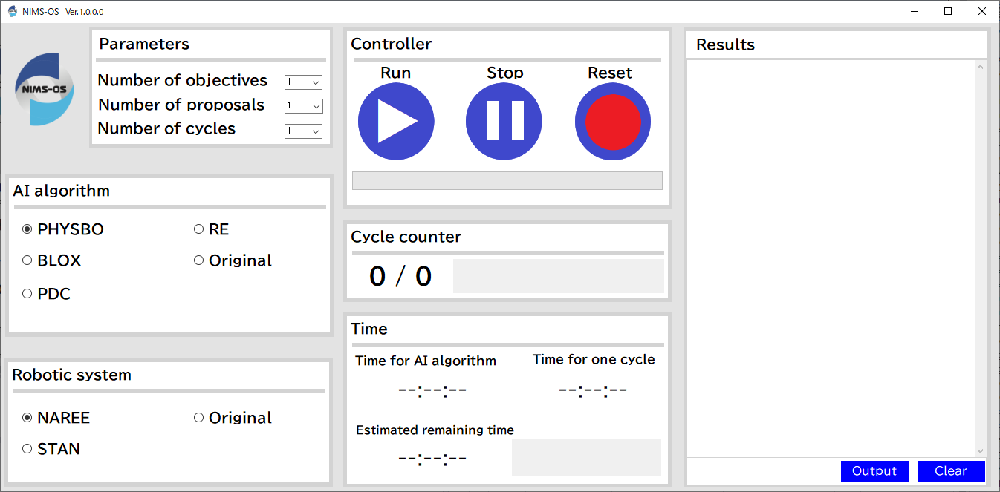

GUI version
A GUI version of the NIMS-OS has been created and released for easy execution.
Install
System requirements
Windows 10 (64bit)
Windows 11
Install procedures
Before installing the GUI version, Python version of NIMS-OS is required according to install .
Download the installer (nimsos-gui-main.zip) on GitHub from GitHub .
Unzip the zip file in an appropriate location, and you will find the following folder structure. Setup folder contains the setup program for Windows.
{kind=link}
Launch setup.exe in the Setup folder to start the installer as shown below. Click “Next”.
{kind=link}
The screen for specifying the installation location is appeared. Here, specify the D:¥NIMSOS folder. If the D drive is not available, specify the C drive. If the C drive is used, change the D drive to the C drive in NIMSOS.ini file such as using Notepad.
{kind=link}
On the following screen, click “Next” to start the installation.
{kind=link}
When the installation is successfully completed, the screen changes to the following. Click “Close” to finish the installation.
{kind=link}
After installation, confirm that the NIMS-OS is added to the Start menu of Windows.
{kind=link}
In the installation foloder of NIMSOS, there is a SCRIPT folder, which contains the following Python scripts. These scripts are executed in the GUI.
{kind=link}
ai_tool.py: Python script for execution of AIai_tool_original.py: Original Python script for execution of AI (If original is selected, this script is used.)analysis_output.py: Python script for analysis of results by robotic experiments and update of candidates filesanalysis_output_original.py: Original Python script for analysis of results by robotic experiments and update of candidates files (If original is selected, this script is used.)preparation_input.py: Python script for creation of input files for robotic experiments and execution of robotic experimentspreparation_input_original.py: Original Python script for creation of input files for robotic experiments and execution of robotic experiments (If original is selected, this script is used.)
Uninstall
To do uninstall, go to Windows Control Panel → Programs → Programs and Features and uninstall NIMS-OS as follows.
{kind=link}
Usage
The GUI version of the operation screen is shown in the figure below.
In this GUI version, the name of the candidates_file is fixed to candidates.csv, and the name of the proposals_file is fixed to proposals.csv.
The execution procedure is as follows.
Enter the number of objectives, proposals, and cycles in the Parameters section.
Select the method to be used in the AI algorithm section. If we use a newly created module for AI method
ai_tool_original.py, click on Original.Select the robotic system in the Robotic system section. If we use a newly created robotic system
preparation_input_original.pyandanalysis_output_original.py, click on Original.Press the run button on the Controller section to start the automated materials exploration.
When the NIMS-OS is started, the Cycle counter operates. Furthermore, in the Time section, the times required to execute the AI algorithm and one cycle are measured, respectively, and the remaining time is also outputted. The standard output of the Python version is displayed in real time in the Results section, and these outputted results can be saved as a file by pressing the Output button.
To pause the automated exploration, you can press the stop button of the Controller section. Note that pressing this button does not stop immediately, but when the
candidates_fileis updated, the NIMS-OS is stopped.To reset the settings, press the reset button on the Controller.